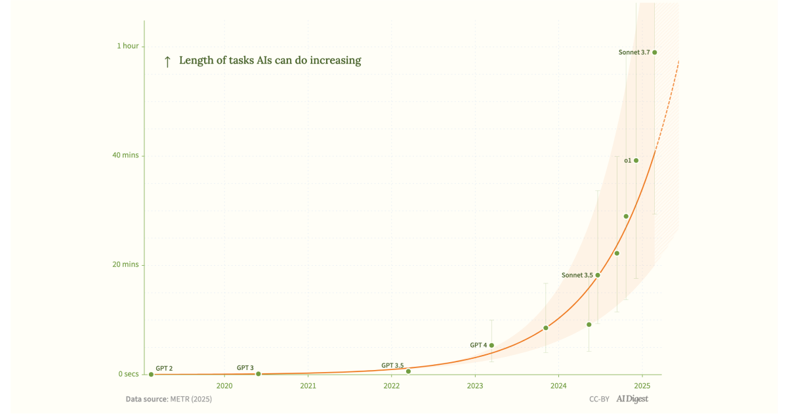

📡 每日 AI 资讯电波
AI重塑世界：本周5大惊喜
2026-04-28 · 共 5 条 · 时长约 6分7秒
你的浏览器不支持音频播放。
📑 章节
00:21
AI考古：庞贝遇难者被“复活”
01:33
AI版“摩尔定律”诞生：智能体效率每18个月翻倍
02:41
AI语音助手“空降”YouTube：搜索变聊天
03:44
画一张图，AI就替你敲代码？
04:55
让AI更“通人性”：上下文感知的单词查询工具
▶ 00:21
1. AI考古：庞贝遇难者被“复活”
考古学家利用3D扫描和深度学习技术，重建了庞贝火山遇难者的容貌与生前状态。该技术通过分析骨骼特征推断年龄、性别、健康及死亡姿势，颠覆了传统考古依赖人工复原的模式。未来将应用于法医鉴定、历史纪录片及家谱可视化，使博物馆展品从静态骨架变为动态数字故事。
考古
3D扫描
深度学习
法医
庞贝
来源: NPR
原文 →

▶ 01:33
2. AI版“摩尔定律”诞生：智能体效率每18个月翻倍
研究者提出'Time Horizons'理论，类似摩尔定律：AI智能体的有效智力劳动量每18-24个月翻倍。该定律基于模型架构、推理效率与训练数据的协同进化，颠覆了AI进步不可预测的认知。用户将在未来一年半内体验到智能体处理任务速度和复杂度的大幅提升，如报告生成、数据分析等。
摩尔定律
AI智能体
效率
Time Horizons
指数增长
来源: The AI Digest
原文 →
▶ 02:41
3. AI语音助手“空降”YouTube：搜索变聊天
Google在YouTube测试AI对话式搜索，用户可用自然语言提问，AI结合多模态技术分析长视频、Shorts和文字内容后综合反馈。这颠覆了传统关键词搜索模式，实现'聊+看'的交互。用户无需纠结搜索词，即可获得精准的视频推荐，提升学习和娱乐效率。
YouTube
对话式搜索
多模态
检索增强生成
谷歌
来源: The Verge
原文 →
▶ 03:44
4. 画一张图，AI就替你敲代码？
Extern工具超越传统UI生成，可根据设计图自动构建后端逻辑、数据库及API接口，实现从设计到功能的端到端生成。其核心技术为代码生成大模型与智能体网络的结合，能自主决策技术栈并组装功能。这改变了对AI仅辅助编码的认知，使个人或小团队能快速搭建可用软件，极大降低开发门槛。
Extern
代码生成
后端
智能体
MVP
来源: Hacker News
原文 →
▶ 04:55
5. 让AI更“通人性”：上下文感知的单词查询工具
QuickDef浏览器插件利用GPT-4o-mini模型，实现上下文感知的单词查询。传统词典仅提供静态释义，常与原文语境不符；QuickDef则结合所在句子信息给出精准解释。其技术核心是让AI同时处理单词与上下文词语，改善阅读体验。对英语学习者，这能显著减少因查词导致的注意力中断，提升阅读流畅度。
上下文感知
词典
GPT
阅读
Chrome插件
来源: Hacker News
原文 →